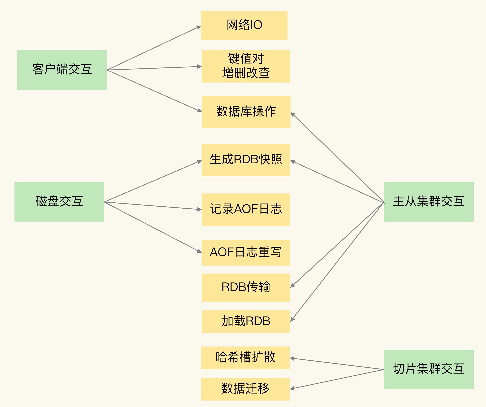

异步机制
阻塞点
- 客户端：网络 IO，键值对增删改查操作，数据库操作；
- 磁盘：生成 RDB 快照，记录 AOF 日志，AOF 日志重写；
- 主从节点：主库生成、传输 RDB 文件，从库接收 RDB 文件、清空数据库、加载 RDB 文件；
- 切片集群实例：向其他实例传输哈希槽信息，数据迁移

客户端
- 集合全量查询和聚合操作
- bigkey 删除操作就是 Redis 的第二个阻塞点
- 清空数据库 flushdb&flushall
和磁盘交互时的阻塞点
- AOF日志同步写
- 加载 RDB 文件
切片集群实例交互时的阻塞点
- 使用了 Redis Cluster 方案，而且同时正好迁移的是 bigkey 的话，就会造成主线程的阻塞，因为 Redis Cluster 使用了同步迁移
删除和清空新命令
- UNLINK
- FLUSHDB ASYNC
- FLUSHALL ASYNC